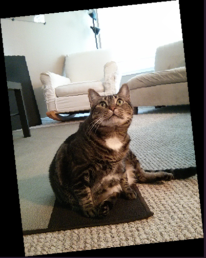
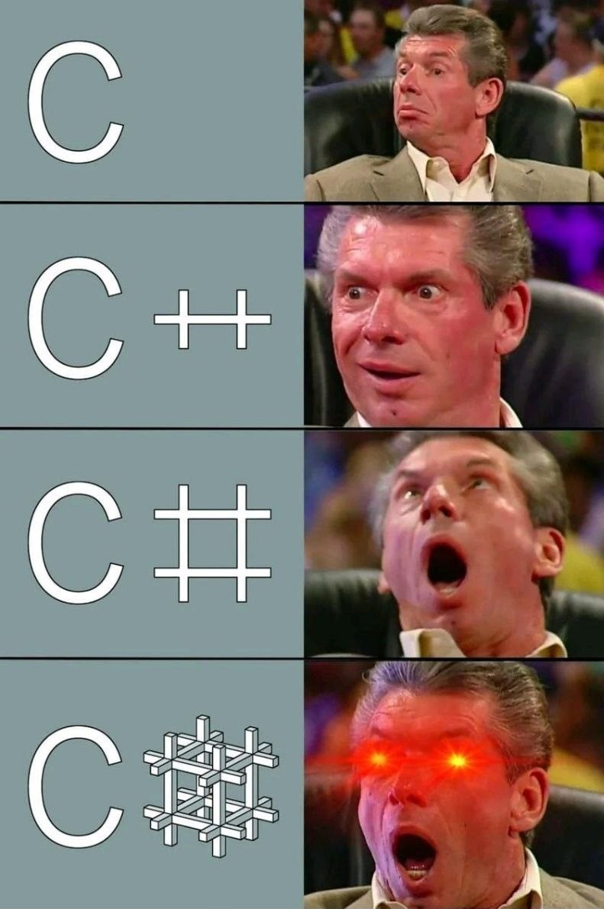

12 Manipulació d'imatges
Pillow (PIL) és un paquet de Python de tercers (third-party) per a interactuar amb arxius d'imatge. Aquest paquet compta amb diverses funcions que faciliten retallar, redimensionar i editar el contingut d'una imatge. Per a poder fer-ho, importarem solament el mòdul Image de la llibreria.
from PIL import Image
imatge_gat = Image.open('zophie.png')
imatge_gat.show()
Mitjançant la funció open() d'Image crearem un objeto de tipus imatge a partir d'un arxiu emmagatzemat en l'ordinador. Els diferents mètodes i atributs d'aquest objeto ens permetran modificar la imatge. Per exemple, mostrarem la imatge carregada mitjançant la funció show().

12.1 Característiques de les imatges
Podem accedir als atributs de nom, format i grandària de la imatge de la següent manera.
print('Nom: ' + imatge_gat.filename)
print('Format: ' + imatge_gat.format)
ample, alt = imatge_gat.size
print('Ample =', ample, ' / Alt =', alt)
#Guardem en un altre format (jpg)
imatge_gat.save('zophie.jpg')

Com veiem, es pot guardar la imatge en un format diferent mitjançant save().
En Python, els píxels d'una imatge s'adrecen mitjançant les coordenades x i y, que especifiquen, respectivament, la seua posició horitzontal i vertical. L'origen és el píxel en la cantonada superior esquerra de la imatge i s'especifica amb la notació (0, 0).


El primer 0 representa la coordenada x, que comença en 0 a l'origen i augmenta d'esquerra a dreta. El segon 0 representa la coordenada y, que comença en 0 a l'origen i augmenta cap avall, la qual cosa és contrària a com s'expliquen normalment a la classe de matemàtiques.
Moltes de les funcions de Pillow prenen com a argument una tupla de caixa (recorda que una tupla és “com una llista”, però immutable). Això significa que Pillow espera una tupla de quatre coordenades enteres que representen una regió rectangular en una imatge. Els quatre enters són, en ordre, els següents:
Left: La coordenadaxde la vora més a l'esquerra de la caixaTop: La coordenadayde la vora superior de la caixaRight: La coordenadaxd'un píxel a la dreta de la vora més a la dreta de la caixa. Aquest enter ha de ser major que l'enter esquerreBottom: La coordenadayd'un píxel per davall de la vora inferior de la caixa. Aquest enter ha de ser major que l'enter superior
Cal tindre en compte que la caixa inclou les coordenades esquerra i superior, i arriba fins a, però no inclou, les coordenades dreta i inferior. Per exemple, la tupla de caixa (3, 1, 9, 6) representa tots els píxels de la caixa negra de la figura anterior.
12.2 Retallar, copiar i apegar
Una vegada coneixem la manera de referenciar els píxels d'una imatge en Python, podem retallar una imatge mitjançant la funció crop(), passant-li la caixa a tallar amb una tupla de la següent manera.
#Creem una nova a partir d'un tall de l'original
imatge_cara = imatge_gat.crop((150, 150, 240, 250))
imatge_cara.save('tallada.png')
imatge_cara.show()

La imatge retallada podem, per exemple, apegar-la en diferents llocs de la imatge original. Ho farem sobre una còpia de l'original, creada mitjançant la funció copy(), per a així mantindre l'original sense canvis.
#Pega la cara tallada sobre una còpia de la imatge original
copia_gat = imatge_gat.copy()
copia_gat.paste(imatge_cara, (0, 0))
copia_gat.paste(imatge_cara, (250, 250))
copia_gat.save('pegada.png')
copia_gat.show()

La funció paste() permet apegar una imatge sobre una altra, definint el píxel inicial a partir del qual s'apegarà mitjançant una tupla de 2 punts (x, y).
Jugant amb la funció paste() i 2 bucles for aniuats, podem aconseguir un mosaic de cares de gats sobre una còpia de la imatge original.
# Crea un mosaic de cares damunt la imatge original
ample_cara, alt_cara = imatge_cara.size
mosaic_gat = imatge_gat.copy()
#for left in range(0, ample, ample_cara):
for left in range(0, 3*ample_cara, ample_cara):
for top in range(0, alt, alt_cara):
print(left, top)
mosaic_gat.paste(imatge_cara, (left, top))
mosaic_gat.show()
mosaic_gat.save('mosaic.png')

En aquest exemple utilitzem l'ample/alt de la imatge original (ample, alt) i el de la imatge de la cara (ample_cara, alt_cara) per a definir els valors left/top a partir dels quals s'apegarà cadascuna de les cares. El primer for recorrerà les files del mosaic, mentre que el for aniuat recorrerà les columnes:
-
range(0, ample, ample_cara): comença en el píxel horitzontal0, arriba a l'últim píxel de l'ample de la imatge original, incrementant en un nombre de píxels igual a l'ample de la imatge de la cara. -
range(0, alt, alt_cara): comença en el píxel vertical0, arriba a l'últim píxel de l'alt de la imatge original, incrementant en un nombre de píxels igual a l'alt de la imatge de la cara.
A mesura que es van realitzant iteracions completes del bucle aniuat, la imatge final anirà canviant de la següent manera.
 |
 |
 |
|---|---|---|
| left = 0 | left = ample_cara | left = 2*ample_cara |
12.3 Redimensionar i rotar
Les funcions resize() i rotate() ens permeten canviar la grandària d'una imatge i rotar-la respectivament.
# Canvia el tamany
imatge_reduida = imatge_gat.resize((int(ample / 2), int(alt / 2)))
imatge_reduida.show()
imatge_reduida.save('reduida.png')
El mètode resize() torna un nou objecte Image amb l'ample i alt especificats (no modifica l'Image original). Accepta una tupla de dos enters que representa les noves dimensions. Com que només accepta nombres enters, és necessari convertir ambdues dimensions mitjançant int().
Per a assegurar la proporcionalitat de la imatge resultant, és convenient que les noves dimensions siguen múltiples de l'ample/alt original (d'ací l'ús d'ample/2 i alt/2 en aquest exemple).
Si el que volem fer és rotar una imatge, el mètode rotate() torna un nou objecte Image i deixa l'original sense canvis. El mètode accepta un enter o float que representa el nombre de graus que es rotarà la imatge en sentit antihorari.
# Rotar imatges
imatge_gat.rotate(90).save('rotada90.png')
imatge_gat.rotate(180).save('rotada180.png')
imatge_gat.rotate(6).save('rotada6.png')
imatge_gat.rotate(6, expand=True).save('rotada6_expandida.png')
Com veiem, es poden encadenar crides de mètode cridant a save() directament en l'objecte Image tornat des de rotate(), sense necessitat de guardar-lo en una variable intermèdia. Les imatges obtingudes són les següents.



El mètode rotate() té l'argument opcional expand, que es pot establir a True per a ampliar les dimensions de la imatge i que s'ajuste a tota la nova imatge rotada.
Recordeu que, una vegada finalitzem el tractament de les imatges, és convenient tancar tots els objectes Image.
#Tanca totes les imatges
mosaic_gat.close()
imatge_reduida.close()
copia_gat.close()
imatge_cara.close()
imatge_gat.close()
EXERCICI
Crea, a partir de les 2 imatges proporcionades, una nova que mostre exactament el muntatge final.
Imatges inicials:

Resultat: